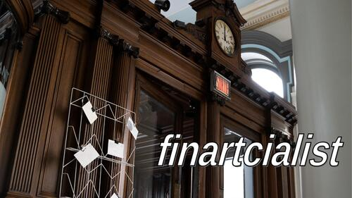
Merci d'être là.
Retour sur neuf ans de pratique artistique, question d'apprendre à se connaître.
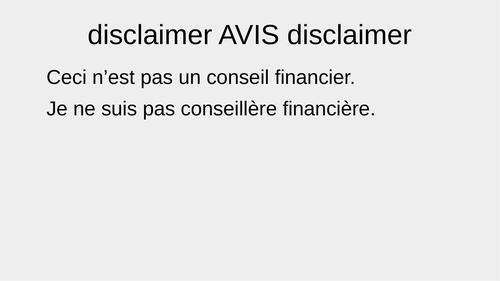
Je ne suis pas conseillère financière et cette présentation n'est pas un conseil financier.
Merci d'adresser vos questions financières personnelles à des gens qualifiés pour y répondre.
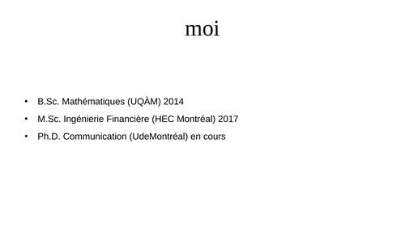
Suite à des études en mathématiques, je complète une maîtrise en ingénierie financière en 2017, à HEC Montréal. Par la suite, j'occupe différents emplois dans des entreprises privées et dans des organismes à but non-lucratif tout en poursuivant ma pratique artistique.
Ayant réussi à identifier les questionnements qui animent cette pratique, j'entreprends à l'automne 2024 un doctorat à l'Université de Montréal, en communication (profil recherche-création).
La présentation du jour sera sur ce qui s'est passé dans ma pratique artistique entre 2016 et aujourd'hui.
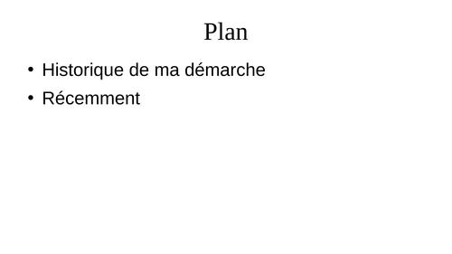
Merci d'être là.
Je vais principalement parler des différents angles qui ont animé mes travaux en art, soit: écouter les marchés; les marchés vu comme médium ou comme contrainte; les marchés intimistes; et enfin, le marché du travail.
Je terminerai sur une ébauche des sujets animant mon doctorat, soit la question de l'épuisement de la finance - l'art peut-il dissoudre la finance ?
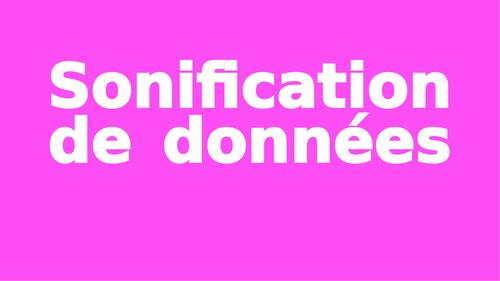
Durant ma maîtrise, je me questionne sur ce que le son pourrait apporter à notre compréhension des différents algorithmes qu'on utilise dans les cours, par exemple les simulations Monte Carlo. Rapidement, je bifurque vers la sonification de données..
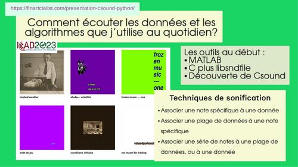
J'ai souvent des questions sur comment je pratique la sonification, mais c'est presque secondaire comme sujet pour moi...
Ce qui est plus important c'est ce que je cherche à sonifier: les concepts auxquels je veux donner forme et mouvement, comme la volatilité, m'obnubilent. Je vais même jusqu'à entâmer un détour vers l'histoire de celle-ci, durant la rédaction de mon mémoire
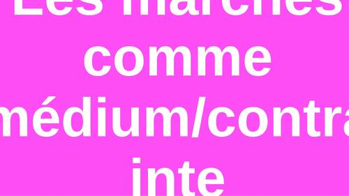
Advient la pandémie. Confinée chez moi, je retourne à mes projets artistiques, cette fois-ci avec l'idée de faire vivre les marchés comme médium ou du moins, comme contrainte artistique. Quelles idées peuvent être exprimées par les marchés ?
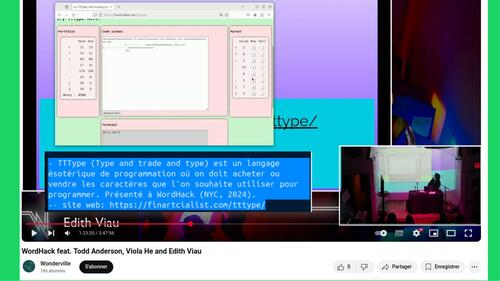
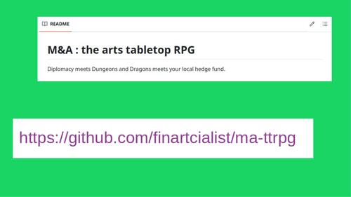
Mergers & Acquisitions - un jeu de rôle injouable avec de drôles de règles dont l'objectif est de permettre à un petit groupe de vivre les tensions reliées aux négociations commerciales.
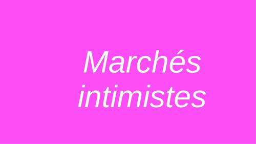
Je me suis souvent demandée comment on se sent, dans son corps, dans l'espace, quand on est un agent de change, un *trader*, sur le parquet, le *trading floor*. Parmi tous ces gens qui crient, qui gesticulent, qui observent...
À défaut de pouvoir l'observer en personne, j'ai redirigé mon questionnement vers l'intimité des marchés.
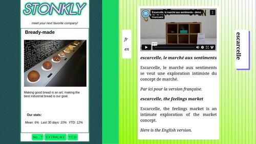
Deux projets explorent ces questionnements: STONKLY et escarcelle.
STONKLY est une app de dating où il s'agit de trouver notre prochaine entreprise préférée.
Présentée à Notam (Norvège, 2024), en ligne
Escarcelle, le marché aux sentiments, invite le public à me faire parvenir un souvenir rédigé sur une carte postale afin d'en recevoir le souvenir d'une autre personne, comme si on pouvait se glisser dans la peau de celle-ci.
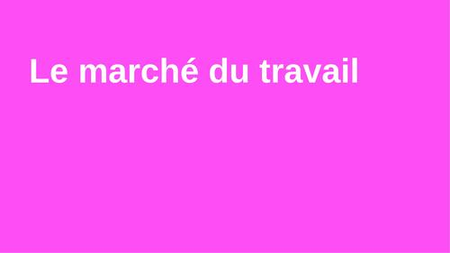
Je me suis beaucoup questionnée sur les marchés financiers, mais il y a d'autres marchés - comme celui du travail. À ce moment, mes différents projets m'amènent à enchaîner les rencontres virtuelles... et je suis épuisée.
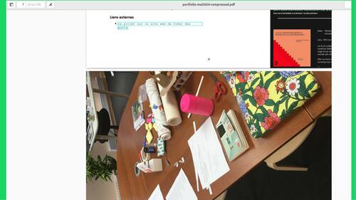
Je me questionne sur la durée de la plus longue rencontre au monde, et je décide d'en faire un projet: la plus longue rencontre du monde est-elle une rencontre ?.
Peut-être que l'art peut jouer son rôle cathartique ?
Présenté à Créer des ponts 2022 par Art souterrain.
Ainsi qu'aux journées d'étude ÉCHEC/SUCCÈS du Bureau de la recherche non-compétitive (Fondation PHI, 2024).
Peut-être qu'on pourrait tenir la plus courte rencontre du monde ?
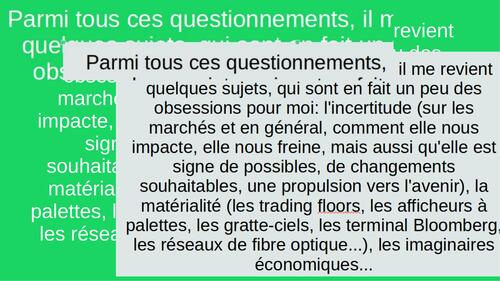
Je tente de regrouper ces différents projets sous le même fil conducteur: l'art peut-il dissoudre la finance ?
Je documente les pratiques artistiques d'autres personnes que moi afin de voir quels sujets les animent, quels sont leurs questionnements, leurs méthodes...
J'aimerais écrire, écrire, écrire. Pour cela, il me faut apprendre de nouveaux outils, de nouvelles méthodes. Je retourne aux études, je commence le doctorat à l'automne 2024.
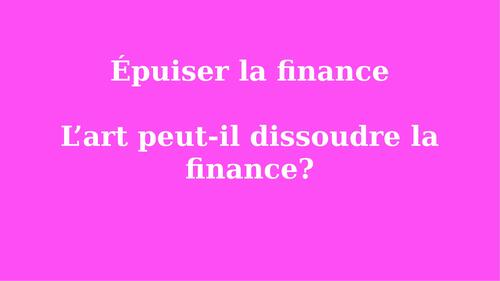
Désassembler la finance. Débusquer ses influences sur l'imaginaire contemporain, détricoter son influence.
Épuiser la finance, la regarder une dernière fois et lui dire adieu. Dépasser la finance, aller plus loin qu'elle, ré-inventer la roue. Ici, l'art devient une méthode d'enquête sur tout ce qui touche à l'humain, et sur ce que l'humain touche, ressent, vit – et évite.
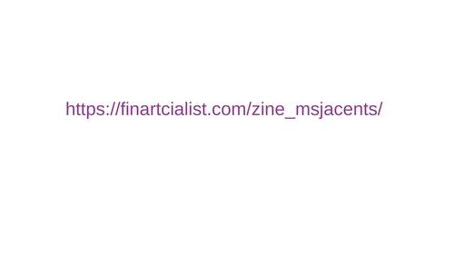
Pour en savoir plus, consultez des zines réalisés il y a quelques années.
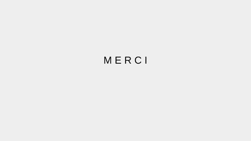
Merci pour votre attention...
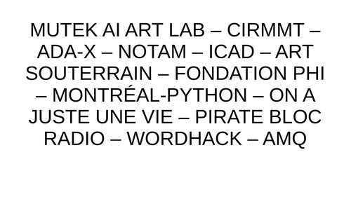
Et merci à celles et à ceux qui ont soutenu mes travaux durant ces années.
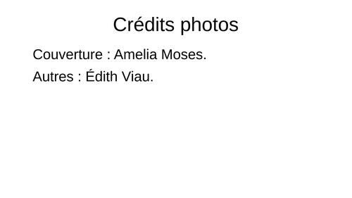
Merci à Amelia Moses pour la photo de la page couverture de cette présentation. Les autres photographies sont de moi.